Status de ferramentas
No TruSmartCAM, cada bloco de peça indica visualmente o status de ferramentas daquela peça para todas as máquinas disponíveis. Isso ajuda os usuários a ver rapidamente para quais máquinas uma peça tem ferramentas, e se as ferramentas estão prontas, requerem revisão ou estão ausentes.
-
O status de ferramentas é mostrado diretamente no bloco da peça usando ícones e indicadores de cor.
-
Cada ícone representa uma tecnologia de máquina (por exemplo, Punção, Laser).
-
A cor do ícone indica o status atual de ferramentas para aquela máquina.
A tabela abaixo explica o significado de cada ícone e cor, ajudando os usuários a interpretar o status de ferramentas com precisão.
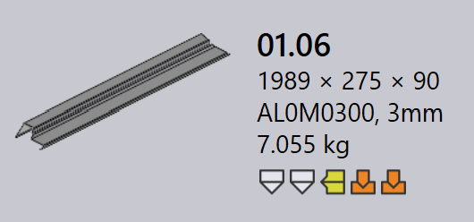
| Ícone da máquina | Descrição |
|---|---|
|
Máquina de corte a laser |
|
Máquina de punção |
|
Prensa dobradeira |
|
Dobradeira de painéis |
| Status de ferramentas | Descrição |
|---|---|
|
Ferramentas OK |
|
Ferramentas com avisos |
|
Ferramentas com erros |
|
Ferramentas não disponíveis |
Erros de ferramentas
Um erro CAM (Computer-Aided Manufacturing) ocorre durante a etapa de preparação de ferramentas ou fabricação. Esses erros surgem devido a problemas como colisões de ferramentas, ferramentas ausentes ou condições de corte inválidas.
Erros de ferramentas de dobra
-
Colisões detectadas e Erro da pinça: A configuração de dobra causa colisões de ferramentas ou garras durante a simulação.
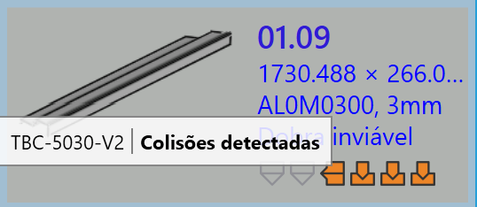 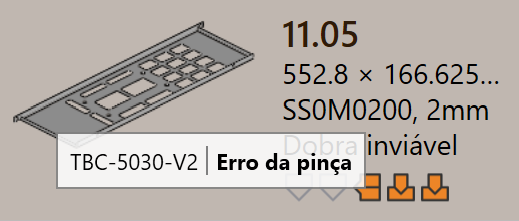
-
Erro de sobrecarga e Aba estreita ou furo muito próximo: As ferramentas de dobra estão sobrecarregadas, ou furos estão localizados muito próximos da linha de dobra, o que pode danificar a peça ou ferramentas.
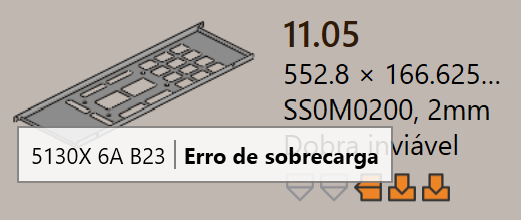 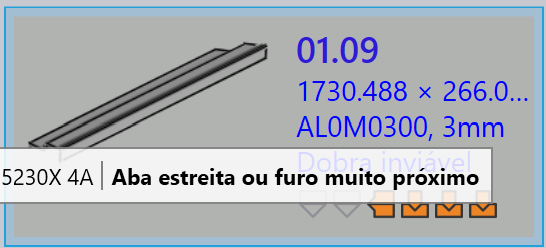
-
Requer revisão e Faixa do punção/faixa da matriz: A configuração de ferramentas precisa de inspeção manual, ou o vão da matriz/punção selecionado é menor que o necessário para a peça.
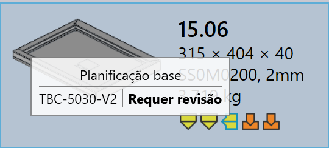 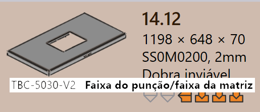
-
Ferramental não atribuído, Batente traseiro insuficiente ou Part too big for this machine: Ferramentas de dobra necessárias não estão disponíveis, o backgauge não está configurado corretamente, ou a peça é muito grande para a máquina selecionada.
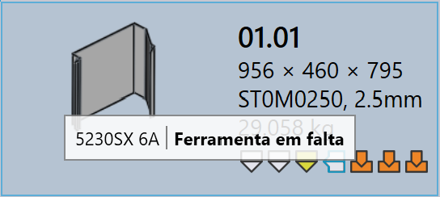 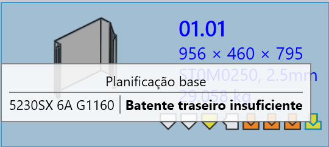 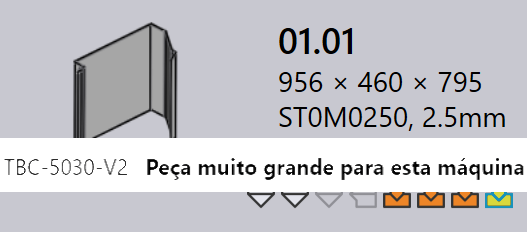
Erros de ferramentas de corte
-
Condição de corte em falta: A condição de corte não está mapeada para o material bruto, então o corte não pode ser realizado.
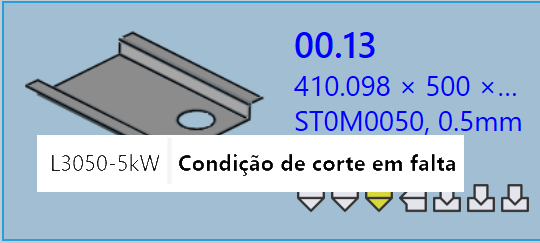
-
Cavacos detectados: Em ferramentas de punção, loops internos são totalmente ferramentados sem quaisquer abas ou juntas de fixação. Isso pode causar pequenos pedaços cortados (slugs) que caem livremente durante a punção.
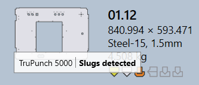
-
Contornos sem ferramentas ou parcialmente ferramentados: Algumas formas ou arestas são perdidas ou apenas parcialmente cobertas durante o processo de ferramentaria, tornando a peça incompleta para corte.
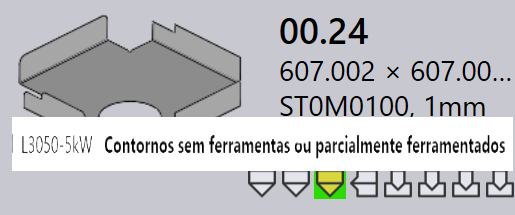